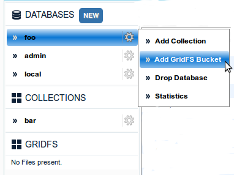
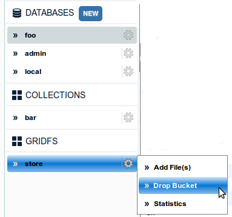

You can add a new collection to a DB by clicking on Add GridFS Bucket in the menu that appears when you hover over the database name.
Enter the bucket name and click submit.

Hover on the Collection name and click Drop Bucket from the menu that appears as shown below.
Click Yes on the confirmation alert to delete the bucket. The bucket along with all its files will then be dropped.
Hover on the GridFS Bucket name and click Statistics from the menu.